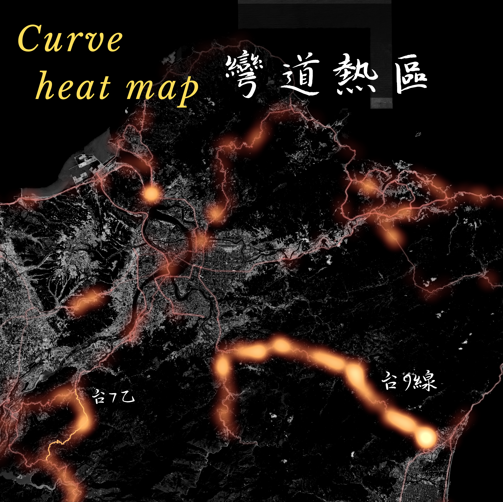
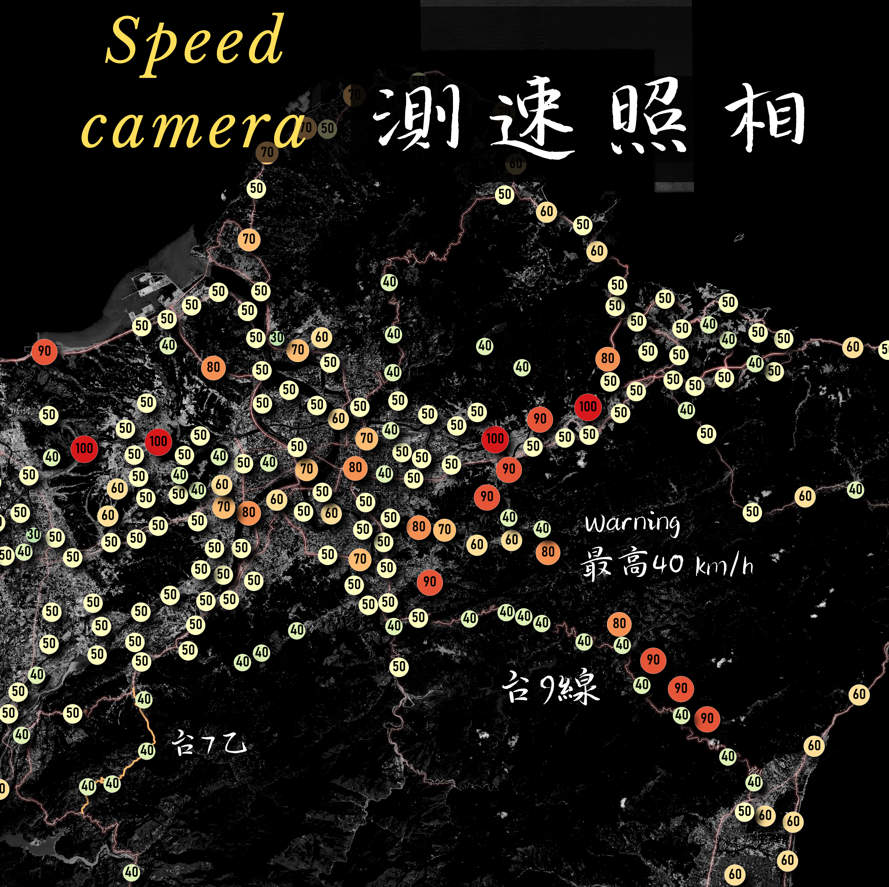

自我介紹
我來自的學校
台北市立大學：
- 我們有兩個校區，天母和博愛校區，城發系在天母，有點偏僻
我的科系：
- 就讀城市發展學系，主要專業是城市規劃與地理資訊系統 (GIS)，目前為大三學生
- 雖然我們核心不是測量但是在規劃過程中經常用到GIS，有了這項工具後能讓我事半功倍 ，比起每張圖都熬夜加班進到繪圖軟體描繪快了許多。

當興趣遇到GIS
因為跑山而認識 DEM?
- 這個興趣源自於我喜歡跑山，大一時騎著BWS發現跑山的時候會有很多測速照相。於是我就開始研究跑山路線，因為測速照相太多，從而透過DEM評估公路系統的坡度、測速照相點位等特性，進而了解哪裡適合跑山，並且是安全的。
- 最初透過以QGIS建立跑山模型，然後加上套疊製作台七乙跑山路線圖，並且透過插件製作跑山路線的3D視覺化。 這個興趣讓我開始關注GIS領域，後面則製作更多自己的小研究。
 我的機車BWS 125
我的機車BWS 125
 我的機車BWS 125
我的機車BWS 125

目前關注的方向
透過遙測影像監測以色列開戰時的SO2
- 例如砲擊可能產生SO2等氣體，覺得這項技術超酷還可跟國際時事結合，不用只看新聞才知道。
公園綠地公平性
- 這個研究是我大三時的專題，主要是透過GIS分析不同社經族群的公園綠地公平性，並且提出改善建議。
萬華街區的建模
- 2024年電腦輔助設計之寒假作業。由於茶室文化老街的興衰，有感於此特別保留西園路之巴洛克式街廓， 讓老街的傳統風華再現，參照實際街景製作而成。
 ex 以色列開戰時的SO2
ex 以色列開戰時的SO2